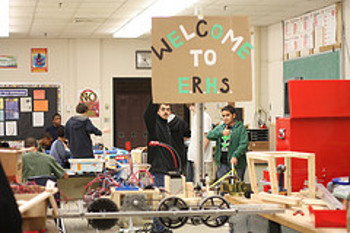
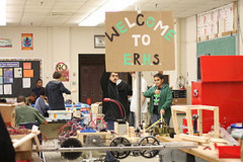

Area 53 is the Robotics team located at Eleanor Roosevelt High School in Greenbelt, MD. The Cow Abductors consists of approximately 50 students who work together to develop, design, and ultimately create innovative solutions to a variety of problems. We strive to encourage creativity and teach real-world skills to our students.
Competition
We are proud annual participants of the FIRST FRC competition and the ION Mini-Urban Challenge. The Eleanor Roosevelt Engineering Team competes in the First Robotics Challenge as Team 53. Additionally, our team also assists others in competitions such as FIRST's First Lego League (FLL) competition.
FIRST Robotics
FIRST (For the Inspiration and Recognition of Science and Technology) is an organization dedicated to instilling the principles of the STEM field in today's youth. Their main competition, the First Robotics Competition (FRC) is held every year. A new competiton is anounced in early January every year, and every team is given six weeks to build a robot that can meet the challenges of competition.